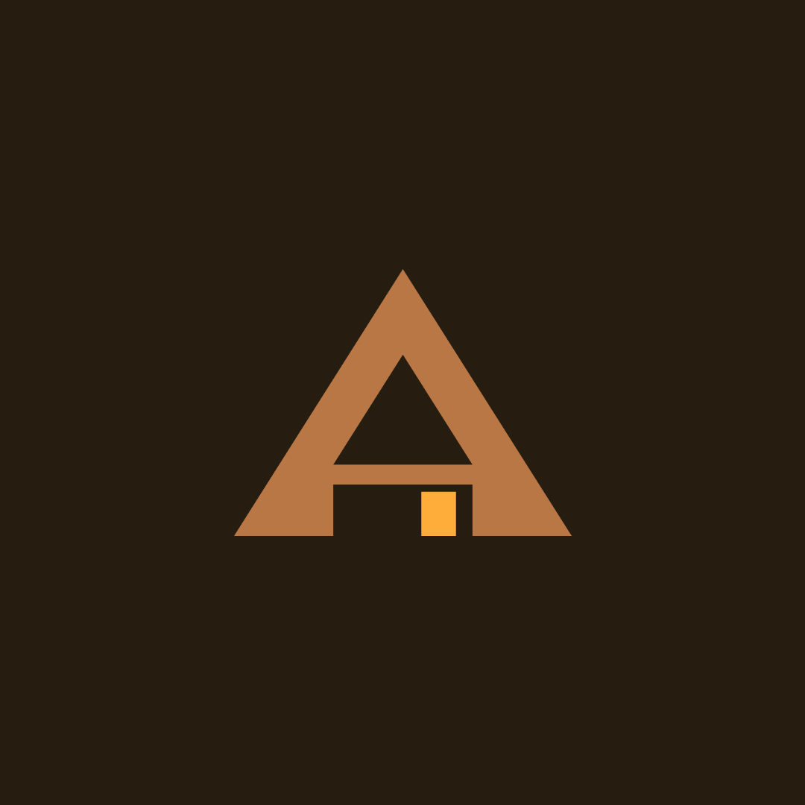

Projects
Restaurant E-commerce Website
A restaurant-style e-commerce website where users can browse food items, add them to a cart, and place orders through an intuitive and user-friendly interface. The system highlights essential features such as menu browsing, order management, and a smooth checkout experience.

SariStock POS
a POS System built for a Sari2 Store or Retail Store using a Relational Database system in a local host Web App. The system is designed to handle various aspects of the store's operations, including sales, inventory, customer management, employee management, and reporting. this can only work on a local host using wamp64 or xampp.

POS Desktop Application
Simple POS app using the Java Swing GUI of IntelliJ IDE. Displays Table for inventory,Sales report and Generate Receipt for processed transaction

NPB: Non-player Broker
An escrow-system built to solve the ongoing scam on online platforms. currently a concept develop on MIT-app inventor and Figma Prototype

Arkila
A Boarding House Management System develop to help landlord and tenant to eliminate Paper recording or Manual transactions. It automates rent and utility Payment Tracking,Provide tenants with a clear payment and maintenance portal and also Integrate digital payments (GCash, Maya, Bank Transfer).